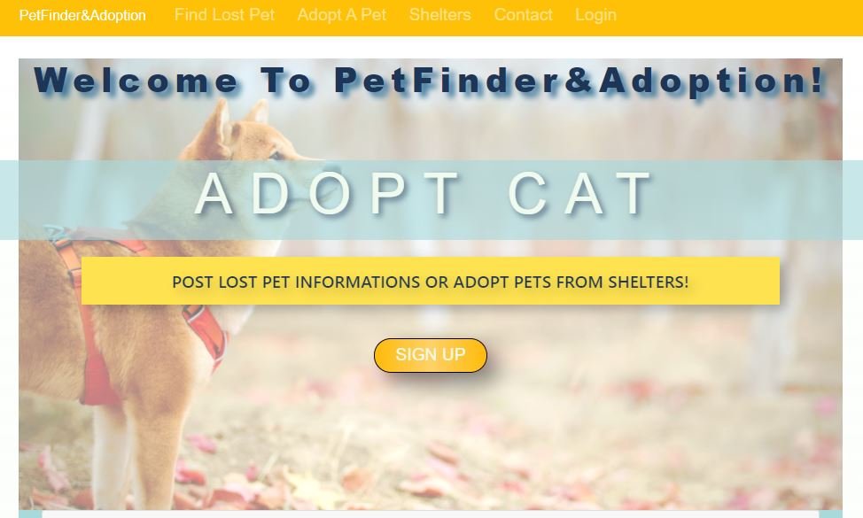
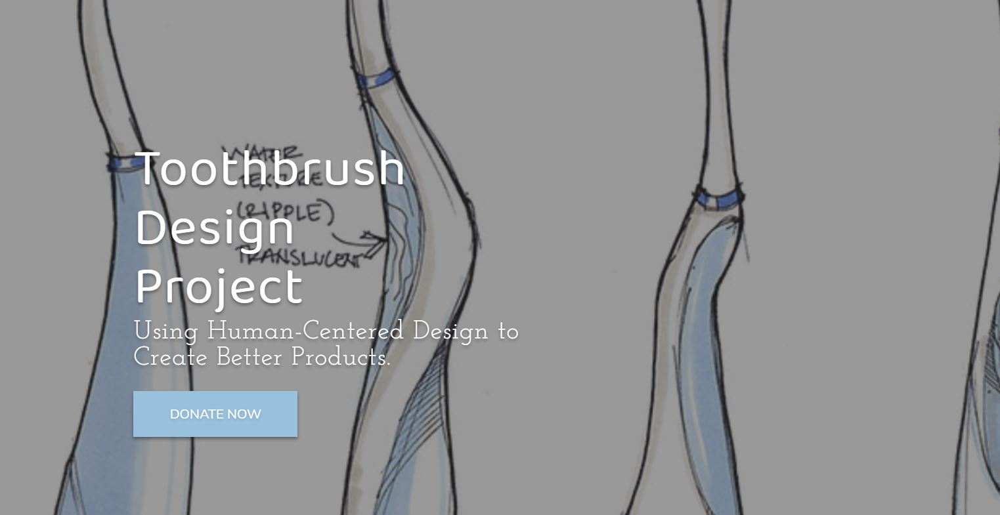
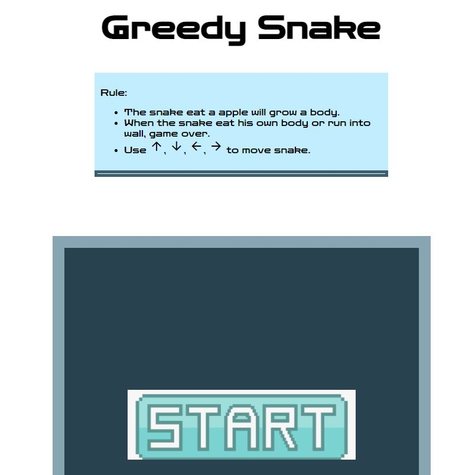

Huiying Sabrina Wang
A Front End Web Developer
I graduated with a biochemistry major in 2019. One year ago, I decided to change my career path and started learning to code. Now, I was rewarded with C++ and Java Certificates from CCSF. I am thinking about applying for a computer science master's program. Besides, I am also a TA of CS11OA and CS111B this semester.
I started my web development study in the late December 2020. My first web development class was "The Web Developer Bootcamp 2021", taught by Colt Steele. I finished this Udemy class in the early January and then completed my first website project - 'PetFinder&Adoption Website'. Creating this website, I learned how to use database(MongoDB), APIs, express, and node to design an interactive website that allows users to log in/log out and store their personal information in online MongoDB cloud. This project also show me the potential of web development and open the door of web design for me.
Web Project: PetFinder&Adoption
The theme of this website is to provide a platform for adopters or pet owners to find lost pets and adopt pets from shelters or individual users.
More Detail:
- Home Page contains some information about lost pets, adoptable pets and shelters. It also includes links to other sub-pages.
- Find Lost Pets Page shows all lost pets.
- Once sign in, users can create, edit, and delete their own lost pet post.
- Users can search the lost pets list according to types of pets or states.
- Adopt Pets Page shows all adoptable pets that
posted by either shelters or individual users.
- Once sign in, individual users can create, edit and delete their own posts.
- Users can search the adoptable pets list according to types of pets or states.
- Users can leave a message and possible adopt date for the pet thay want to adopt. Then that pet owner or shelter owner can send emails to verify information and continue adoption process.
- Shelter Page shows all shelters.
- Users can only create one shelter and be the owner of that shelter.
- Users can also edit and delete the shelter they created.
- In addition, shelter owners can add adoptable pets to their shelter and modify or delete these adoptable pet posts.
- Users who adopt pets from that shelter can leave a comment on the shelter page.
- User Profile page allows users to modify their lost
pets, adoptable pets and shelter.
- They can also check the contact list that contains information of people who want to adopt pets.
Web Project: Cake Design Store
Web Project: Toothbrush Design Project
Web Project: FirstStepToCollege Agency Website
Web Project: Chengdu Restaurant Website

Web Project: Travel to China Website
Web Project: Greedy Snake
The Turn of the Century
This article discusses the history of web development. The proliferation of internet technology in mainstream culture can largely be attributed to its contributions to visual electronic media.
Learning Resources of Web Devlelopment:
- W3schools CSS
Tutorial Homepage
- This website provides general CSS Tutorials for nearly all features of CSS.
- W3schools also provide CSS codes that users can text out themselves.
- The CSS Handbook
- This website provides basic and advanced CSS
- freecodecamp also contains free online coding practice for users.
- The
Web Developer Bootcamp 2021
- This course is the first course I took for web development.
- This course includes basic knowledge about HTML, CSS, and JavaScript. Also, you will learn about the NodeJS, ExpressJS, MongoDB.